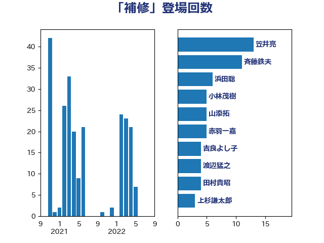

単語「補修」

| 笠井亮 | 日本共産党 | 13 回 |
| 斉藤鉄夫 | 公明党 | 11 回 |
| 浜田聡 | NHK党 | 6 回 |
| 小林茂樹 | 自由民主党 | 5 回 |
| 山添拓 | 日本共産党 | 5 回 |
| 赤羽一嘉 | 公明党 | 5 回 |
| 吉良よし子 | 日本共産党 | 4 回 |
| 渡辺猛之 | 自由民主党 | 4 回 |
| 田村貴昭 | 日本共産党 | 4 回 |
| 上杉謙太郎 | 自由民主党 | 3 回 |
| 太栄志 | 立憲民主党 | 3 回 |
| 牧野たかお | 自由民主党 | 3 回 |
| 井上英孝 | 日本維新の会 | 2 回 |
| 井坂信彦 | 立憲民主党 | 2 回 |
| 和田義明 | 自由民主党 | 2 回 |
| 宮内秀樹 | 自由民主党 | 2 回 |
| 小寺裕雄 | 自由民主党 | 2 回 |
| 小川淳也 | 立憲民主党 | 2 回 |
| 梅村聡 | 日本維新の会 | 2 回 |
| 芳賀道也 | 国民民主党 | 2 回 |
| 萩生田光一 | 自由民主党 | 2 回 |
| 伊藤孝恵 | 国民民主党 | 1 回 |
| 伊藤岳 | 日本共産党 | 1 回 |
| 古川元久 | 国民民主党 | 1 回 |
| 大西英男 | 自由民主党 | 1 回 |
| 室井邦彦 | 日本維新の会 | 1 回 |
| 宮本岳志 | 日本共産党 | 1 回 |
| 宮本徹 | 日本共産党 | 1 回 |
| 小泉進次郎 | 自由民主党 | 1 回 |
| 山本剛正 | 日本維新の会 | 1 回 |
| 岡本三成 | 公明党 | 1 回 |
| 岸真紀子 | 立憲民主党 | 1 回 |
| 平山佐知子 | 無所属 | 1 回 |
| 末松信介 | 自由民主党 | 1 回 |
| 杉久武 | 公明党 | 1 回 |
| 森山浩行 | 立憲民主党 | 1 回 |
| 橘慶一郎 | 自由民主党 | 1 回 |
| 江島潔 | 自由民主党 | 1 回 |
| 熊田裕通 | 自由民主党 | 1 回 |
| 玉木雄一郎 | 国民民主党 | 1 回 |
| 甘利明 | 自由民主党 | 1 回 |
| 稲田朋美 | 自由民主党 | 1 回 |
| 紙智子 | 日本共産党 | 1 回 |
| 茂木敏充 | 自由民主党 | 1 回 |
| 菅義偉 | 自由民主党 | 1 回 |
| 葉梨康弘 | 自由民主党 | 1 回 |
| 西岡秀子 | 国民民主党 | 1 回 |
| 足立敏之 | 自由民主党 | 1 回 |
| 金子恭之 | 自由民主党 | 1 回 |
| 麻生太郎 | 自由民主党 | 1 回 |